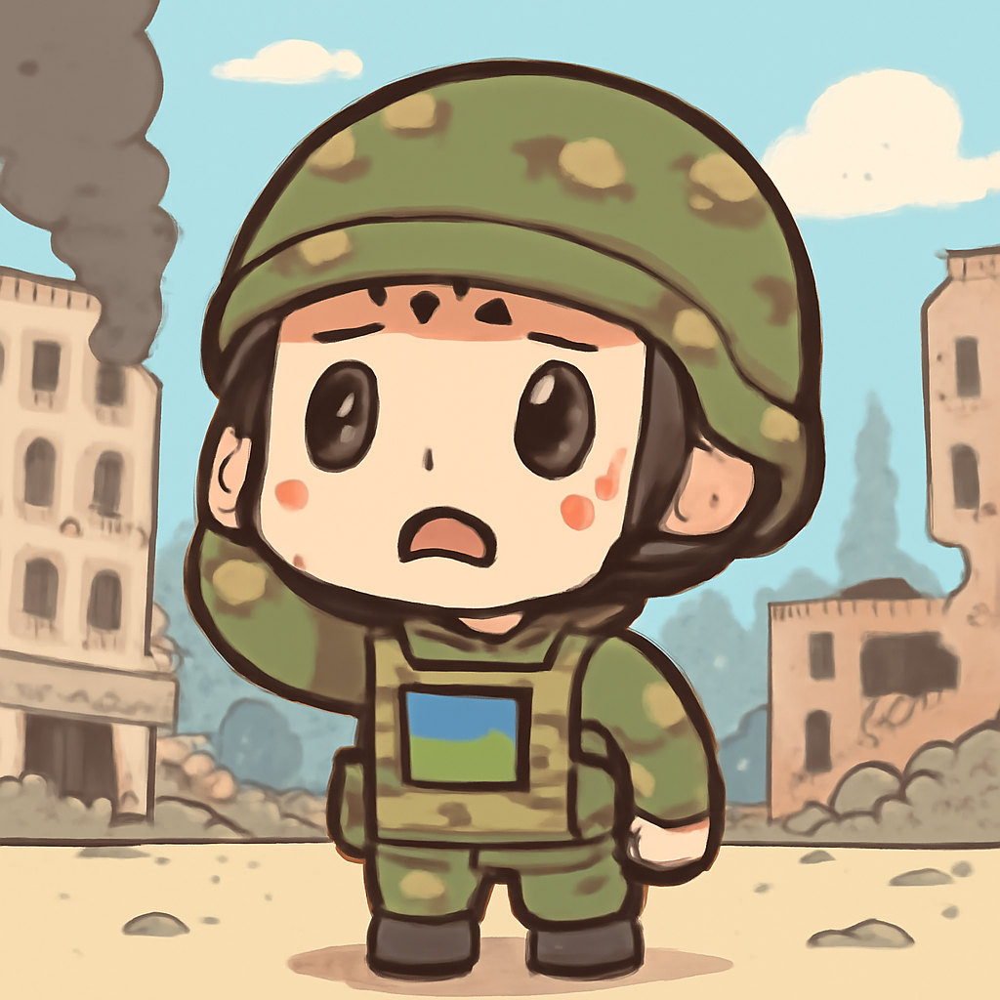
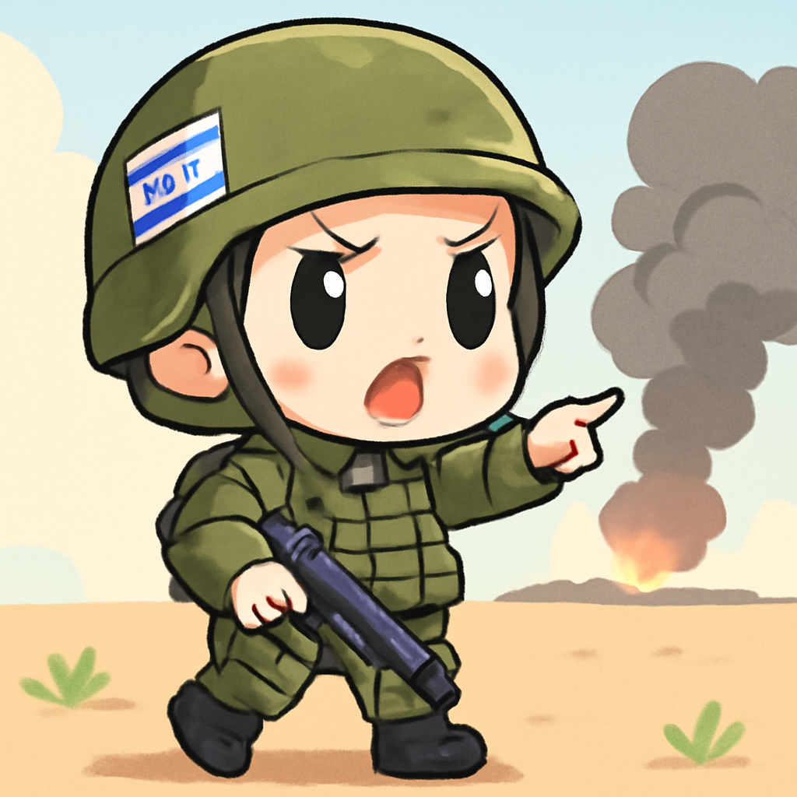

其一 · 俄羅斯基輔 · 俄羅斯威脅加強空襲
俄羅斯計劃加大對基輔的攻擊力度

在烏克蘭首都基輔，俄軍在週六進行了規模相當大的空襲，造成多處損壞。隨後俄方警告外國國籍人士儘快撤離，這一行動可能會引發更大範圍的衝突。這不僅影響當地居民的生活，也讓國際社會對局勢加劇的擔憂再度升溫。希望這場衝突不會演變成一部長篇連續劇。
🔗 原始新聞 ↗
2026-05-26 · 以古觀今，以笑抗愁
俄羅斯計劃加大對基輔的攻擊力度

在烏克蘭首都基輔，俄軍在週六進行了規模相當大的空襲，造成多處損壞。隨後俄方警告外國國籍人士儘快撤離，這一行動可能會引發更大範圍的衝突。這不僅影響當地居民的生活，也讓國際社會對局勢加劇的擔憂再度升溫。希望這場衝突不會演變成一部長篇連續劇。
🔗 原始新聞 ↗
以色列軍方宣佈將加大對真主黨的打擊力度

以色列總理內塔尼亞胡在近期對黎巴嫩的空襲後，表示將進一步加強對真主黨的攻擊。這一系列行動發生在中東地區緊張局勢升高的背景下，直接影響到當地安全形勢及民眾生活。希望這場火藥味不會再升級，否則中東地區恐怕要變成一個大型的火鍋了。
🔗 原始新聞 ↗
白宮附近發生槍擊事件，嫌犯有前科
日前，華盛頓的白宮附近發生槍擊事件，嫌疑人此前曾多次與特勤局發生衝突，甚至聲稱自己是耶穌基督。這一事件不僅讓人對安全形勢感到擔憂，也讓大家開始思考，怎麼會有這麼多「耶穌」在白宮附近出現？希望未來的白宮能夠更安全一些。
🔗 原始新聞 ↗
伊朗和美國在卡塔爾重啟和平談判，局勢緊張
在多哈，伊朗官員與美國重啟和平談判之際，美軍在波斯灣進行了自衛性空襲，局勢相當緊張。這場談判對於中東地區的穩定至關重要，任何進展都可能影響全球能源市場。希望這次談判能讓大家不再需要擔心油價上漲。
🔗 原始新聞 ↗
烏克蘭舉行爭議人物的國葬，社會反響熱烈
烏克蘭近日舉行了對已故的民族英雄安德烈·梅爾尼克的國葬，這位曾被批評為納粹合作者的人物，同時也被視為反抗蘇聯的代表。這一舉動引發了社會的廣泛討論，凸顯了烏克蘭對於歷史認同的複雜性。希望未來的英雄不會再這麼兩極化。
🔗 原始新聞 ↗